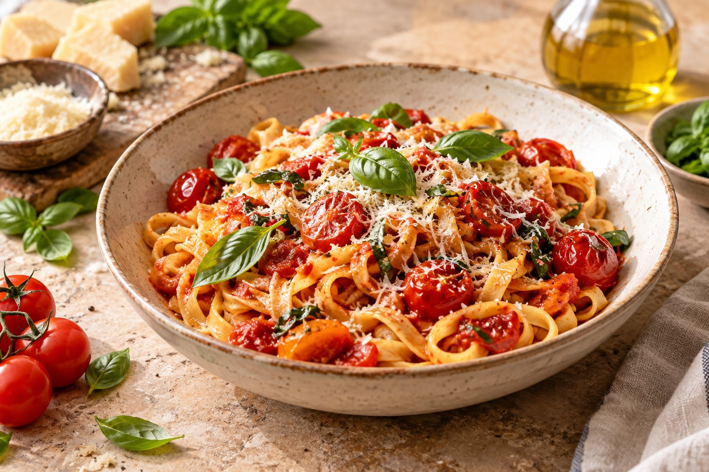

A little inspiration, every day
Find your next
favorite meal.
Good food starts with a little inspiration. Explore recipes made for your taste, your time, and whatever is already in your kitchen.
Try “quick pasta”, “chicken”, or “something sweet”.
20Kitchen favorites
30 minQuick meal ideas
Made for youSmart discovery

🥗
Fresh ideas, dailyFind something delicious
What are you craving?
Explore by category
A good meal for every kind of moment.
The good stuff
Recipes to fall for
A handpicked collection for your next kitchen adventure.
Your kitchen sidekick
Not sure what to cook?
List the ingredients you have. Dishly will suggest a simple recipe using only those ingredients.
Separate ingredients with commas. Include any oil, seasoning, or sauce you want to use.
OPTIONAL: PICK YOUR MOOD